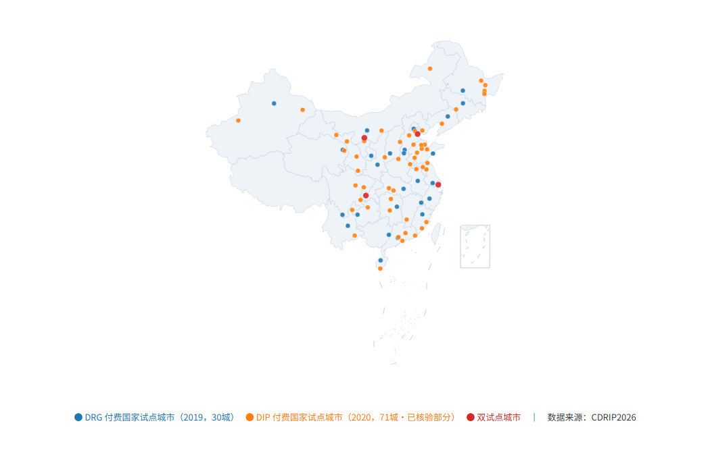

政策工具与内容编码
比较不同层级政策中的改革目标、政策工具与实施机制，建立可追溯的编码规则和文本证据。
聚焦按疾病诊断相关分组（DRG）与按病种分值付费（DIP）改革。
CDRIP2026 由华中科技大学医药卫生管理学院杜思娴主持编制，整理中央与地方支付方式改革政策的题录、来源和内容线索，便于研究者追溯文件、比较政策要素与梳理制度演进。
数据库按成文日期、公开日期和施行日期分别记录，并保留核验状态及依据。研究时可从原始来源继续核对，明确每一条证据的适用范围。
DRG、DIP 与双试点城市，用颜色区分。保留原宣传材料中的分布概览。

先明确研究目的，再选择文本、编码框架和分析方法。
比较不同层级政策中的改革目标、政策工具与实施机制，建立可追溯的编码规则和文本证据。
梳理关键词和主题变化，探索 LDA、BERTopic 或扎根分析等方法；结合原文检查模型与编码的含义。
为 DID、ITS 等研究梳理政策线索。实际结算切换时间需另核实，并结合结局数据、比较组与识别假设。
请引用数据库本身，并在研究中说明实际使用的版本和获取日期。
杜思娴. 中国 DRGs/DIP 支付方式改革政策文本数据库（CDRIP2026）[DB/OL]. Zenodo, 2026-10-28. https://doi.org/10.5281/zenodo.23720911.
Du, S. (2026, October 28). China DRG/DIP Reform Insurance Policy database (CDRIP2026) [Data set]. Zenodo. https://doi.org/10.5281/zenodo.23720911.
感谢华中科技大学医药卫生管理学院 DRG/DIP 研究小组提供的中国 DRG/DIP 支付方式改革政策文本数据库（CDRIP2026）。
欢迎数据申请、学术交流与资料勘误。
在这里检索简介、引用、地图和申请方式。具体政策条目请申请数据库后检索。
正在准备公开信息检索…